3D Computer Graphics and Animation
Week 1
In the first week's lecture we looked at some of the topics we are covering throughout the unit, as well as some of the applications of 3D computer graphics and animation.
In the practical tutorial, we were introduced to the basics of modelling in 3D Studio Max, including the 3DSM UI and working with primatives.
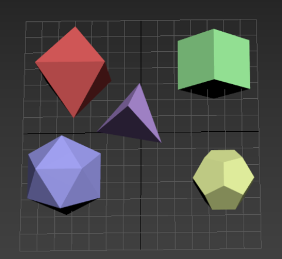 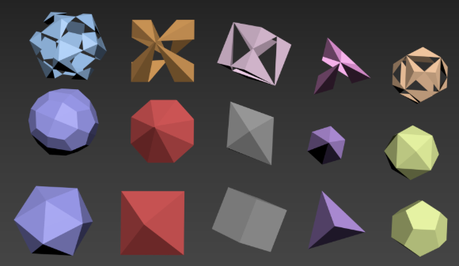Week 2
In the second week's lecture we covered content that looked at the graphics pipeline and coordinate systems. We also looked at Graphics APIs, which include: the Standard API, OpenGL, WebGL, and Direct 3D.
We learned that in 3D modelling, to generate an image we need:
- Object models.
- A view platform: position and orientation.
- Projection: Light rays, tracing paths.
We also looked at projections, both: orthographic and perspective, as well as persective distortions and the roles of the viewing window/frustrum.
An important take-away from this lecture included the prodedure of the graphics pipeline. One way to describe the graphics pipeline is the process of: Local coordinate systems --> World coordinate systems --> Camera coordinate systems --> 3D screen space --> Orthographic projection.
The coordinate systems are used to provide the imformation enable operations to be performed on models. It applies a map to the 3D world to define positions and orientations.
In the practical session we looked at Compound Objects and experimented with them in 3Ds Max. 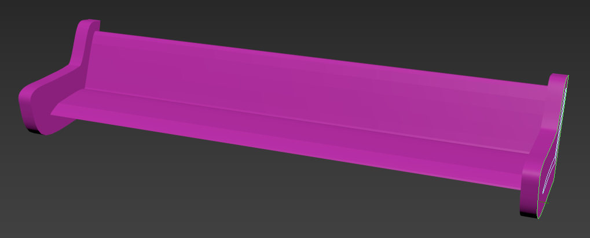 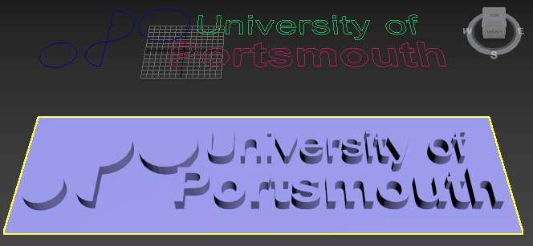 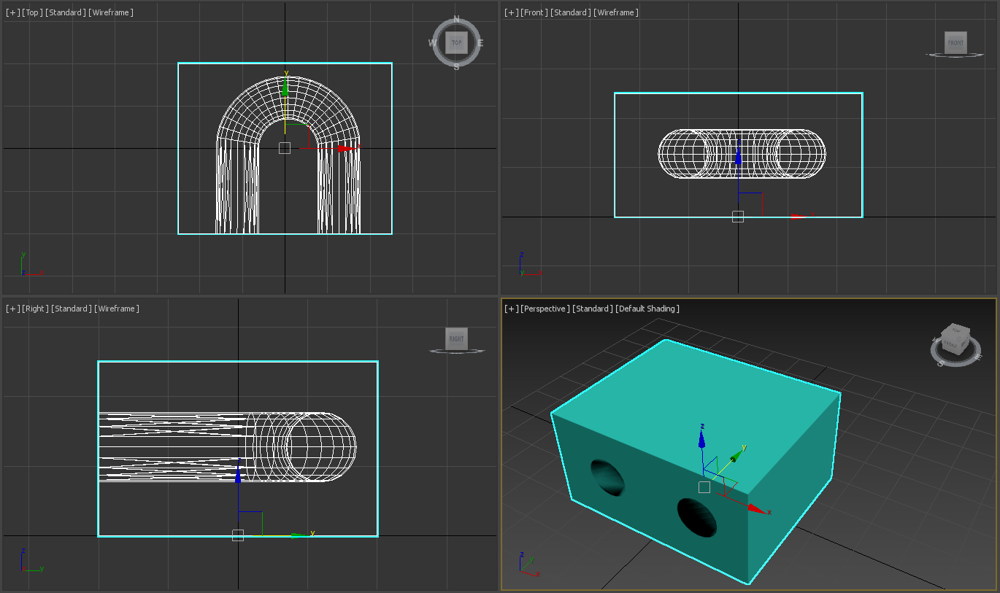
Week 3
In this week's lecture we looked at modeling using geometric priamtives and volume based modelling. We explored both 'hierarchical modelling' and 'constructive solid geometry' (CSG) methods of using primatives.
The hierarchical modelling method works by combining several primatives through transformations into one linked object, whereas the CSG method works by using boolean operations on primatives.
When looking at volume based modelling, we explored the Octree method which works by evaluating: world space, tessellation and labelling.
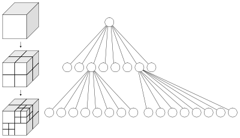In our tutorial session we explored Loft Objects in 3D Studio Max. As a result we produced models of curtains and an object with twists.
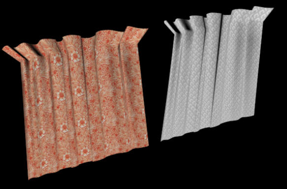 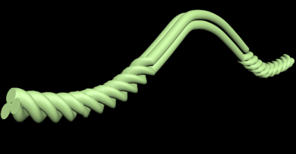Week 4
In the lecture this week, we looked at Modelling with Polygon Meshes. This included looking at: vector and surface normals, defining a polygon mesh, issues with resolutions and the aquisition of polygon mesh models.
A polygon mesh is a connected collection of polygonal facets along with directional information.
In the practical session we looked at Modelling with Meshes in 3DSM to create various 3D shapes. The primary focus was to model an apple, but with the spare time I had, I had fun with bitmaps in the material editor and modelled a Sierpinski Pyramid with my newfound knowledge of snapping to vertices.
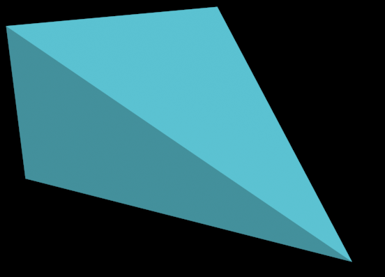 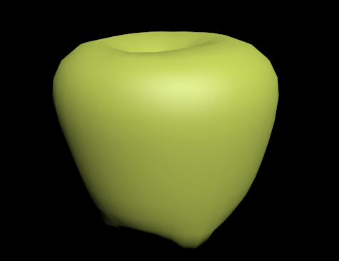 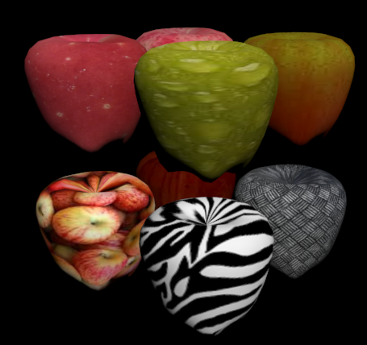 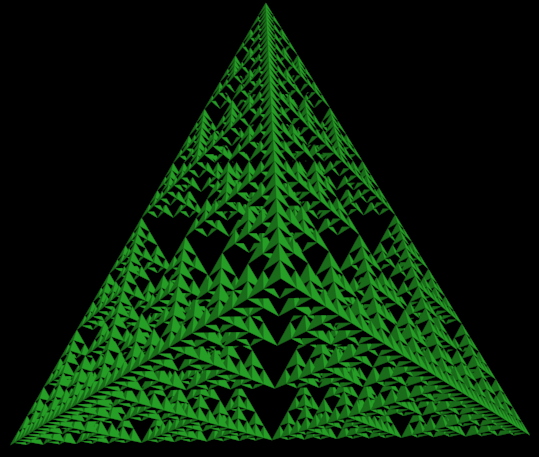